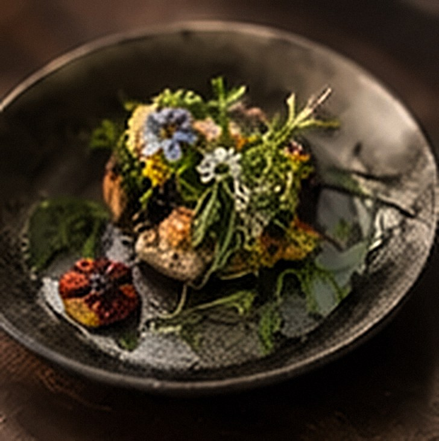

Open with a moment: where you were, what the season was doing, who was there. A reader should be able to picture it before they know what the story is about.
Keep paragraphs short. Three or four sentences read well at this width, on a phone as much as on a laptop.
A subheading to break up the story
Use a subheading every few paragraphs, when the story moves on: from the walk to the kitchen, from the ingredient to the dish.
The first photo uses class="wide" so it runs wider than the text; export it about 2000px wide. Further photos can leave the class off and sit at the width of the text. One or two per story is plenty; the Gallery is for the rest.
A pull quote: one line from the story worth reading twice.
A list, for ingredients or steps
- One ingredient or step per line
- Keep each line short
- Use a numbered list for a recipe method
Close with where the story leads: the dinner it became, the next season, or an invitation to the table.